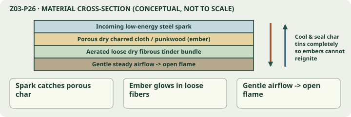

Z03-P26 · Fire and ignition · Adapted historical material
Understand charred-material spark reception and ember transfer
Explain how charred cellulose catches low-energy sparks and transitions a glowing coal into a flame-ready tinder bundle.
When it applies · Conceptual firecraft education and supervised training on authorized cleared sites; NOT a field-validated cold-weather emergency shortcut.
Equipment · Prepared dry charred cloth or identified dry punkwood, loose dry fibrous tinder nest, cleared ring and water.

Actions
- Understand that charring drives off volatile moisture and leaves porous carbonized fibers with a lower ignition threshold able to glow from brief steel sparks.[C10, C03, ED]
- Trace the two-stage transition: a spark starts a slow glowing ember on charred material, and gentle steady airflow inside a loose dry fibrous bundle raises heat until open flame appears.[C10, C03, ED]
- Keep charred materials sealed completely dry and cool before storage—improperly extinguished char tins or smoldering cloth can reignite inside a pack or pocket.[C04, C11, ED]
Failure recognition · Blowing violently on a fragile ember until it flies out of the bundle, or pocketing warm charred cloth that smolders through pack fabric.[C03, C04, ED]
Verify · Trace the progression spark -> glowing ember -> aerated dry bundle -> flame conceptually before any supervised live practice.[C10, C03, ED]
Stop or change course · Never inhale thick tinder-bundle smoke, never practice indoors and drown all glowing embers completely cold when training ends.[C04, C05, C01]
Evidence and editorial notes
- C01 · Minnesota DNR · Fire Danger and Burning Restrictions (current web edition; verify at use)
- Section: Fire danger and burning restrictions map and links · Conditions: Current Minnesota location, date and jurisdiction
Support: Check current restrictions and local authority requirements before lighting.
Limitations: Restrictions can change daily with humidity, wind, and drought; verify immediately before use. · Conflicting evidence: None; local jurisdiction always supersedes general notes.
Editorial note: Mandatory legal check before any live fire card. · Specialist reviewer: Fire prevention and local land management
Primary source · checked 2026-11-24 - C03 · USDA Forest Service / Smokey Bear · Smokey Bear’s Campfire Safety Guide (agency PDF)
- Section: Build your campfire > Tinder, kindling, fuel · Conditions: Outdoor authorized campfire
Support: Dry tinder, small kindling and larger fuel serve different roles. Gather materials before ignition. Avoid accelerants.
Limitations: Species availability and moisture content vary by season and local collection rules. · Conflicting evidence: None; separates material function from unverified species claims.
Editorial note: Used to stage three-tier fuel geometry without prescribing specific live trees. · Specialist reviewer: Fire prevention
Primary source · checked 2026-11-24 - C04 · USDA Forest Service / Smokey Bear · Smokey Bear’s Campfire Safety Guide (agency PDF)
- Section: Maintain and extinguish a campfire · Conditions: Occupied campfire, water and tools available
Support: Stay with the fire. Drown, stir and add water again until cool. Leaving visible embers or merely covering them is unsafe.
Limitations: Deep duff or peat soils can hold smoldering embers underground even after surface ash cools. · Conflicting evidence: None; prohibits dirt-only burial as primary extinguishment.
Editorial note: Enforces drown-stir-feel-cold cycle before site departure. · Specialist reviewer: Fire prevention and land management
Primary source · checked 2026-11-24 - C05 · CPSC · Portable Heaters and Camping Equipment (current web edition)
- Section: Carbon monoxide poisoning from portable camping equipment · Conditions: Tents, campers, vehicles and other enclosed spaces
Support: Fuel-burning camping equipment can lead to fatal carbon monoxide buildup in enclosed spaces.
Limitations: High altitude increases incomplete combustion and CO production. · Conflicting evidence: None; aligns with CDC-CO and NPS guidance.
Editorial note: Hard-stop prohibition against indoor/vestibule/tent combustion. · Specialist reviewer: Carbon monoxide safety and emergency medicine
Primary source · checked 2026-11-24 - C10 · NPS · Flint and Steel at Pipe Spring National Monument (2015-02-24)
- Section: What > Firemaking with flint and steel · Conditions: Historical hard stone and suitable steel demonstration
Support: With traditional flint-and-steel, the flint removes small particles of steel that oxidize in air; a receptive tinder material catches the hot particles.
Limitations: Requires high-carbon steel and sharp hard rock (e.g., chert/flint); random unknown rocks fail and can fracture dangerously. · Conflicting evidence: Corrects common misconception that sparks come from the rock itself.
Editorial note: Used for mechanism diagrams and cold-inspection teaching cards. · Specialist reviewer: Fire prevention and materials mechanics
Primary source · checked 2026-11-24 - C11 · NPS · Ten Essentials (current web edition)
- Section: Fire and illumination · Conditions: Outdoor emergency kit
Support: Carry a dependable ignition option and protect it from moisture. Carry a separate light.
Limitations: Disposable butane lighters lose vapor pressure in freezing cold; matches fail when damp. · Conflicting evidence: None; supports redundant dry ignition kit planning.
Editorial note: Keeps lighting independent of fire-building. · Specialist reviewer: Field equipment and fire prevention
Primary source · checked 2026-11-24
Source lineage · NPS Pipe Spring flint-and-steel and B008 mechanisms; adapted historical material · Classification · Adapted historical material.